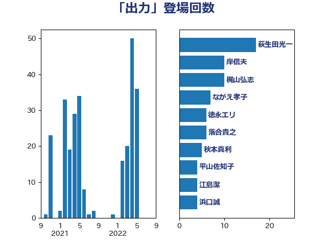

単語「出力」

| 萩生田光一 | 自由民主党 | 17 回 |
| 岸信夫 | 自由民主党 | 10 回 |
| 梶山弘志 | 自由民主党 | 10 回 |
| ながえ孝子 | 無所属 | 7 回 |
| 徳永エリ | 立憲民主党 | 6 回 |
| 落合貴之 | 立憲民主党 | 6 回 |
| 秋本真利 | 自由民主党 | 5 回 |
| 平山佐知子 | 無所属 | 4 回 |
| 江島潔 | 自由民主党 | 4 回 |
| 浜口誠 | 国民民主党 | 4 回 |
| 金城泰邦 | 公明党 | 4 回 |
| 山添拓 | 日本共産党 | 3 回 |
| 森本真治 | 立憲民主党 | 3 回 |
| 笠井亮 | 日本共産党 | 3 回 |
| 細田健一 | 自由民主党 | 3 回 |
| 小野泰輔 | 日本維新の会 | 2 回 |
| 杉久武 | 公明党 | 2 回 |
| 杉本和巳 | 日本維新の会 | 2 回 |
| 梅村聡 | 日本維新の会 | 2 回 |
| 浜野喜史 | 国民民主党 | 2 回 |
| 石井章 | 日本維新の会 | 2 回 |
| 石川昭政 | 自由民主党 | 2 回 |
| 長坂康正 | 自由民主党 | 2 回 |
| 高橋千鶴子 | 日本共産党 | 2 回 |
| おおつき紅葉 | 立憲民主党 | 1 回 |
| 佐藤啓 | 自由民主党 | 1 回 |
| 北村経夫 | 自由民主党 | 1 回 |
| 吉田とも代 | 日本維新の会 | 1 回 |
| 大塚耕平 | 国民民主党 | 1 回 |
| 大家敏志 | 自由民主党 | 1 回 |
| 宗清皇一 | 自由民主党 | 1 回 |
| 宮崎雅夫 | 自由民主党 | 1 回 |
| 宮本周司 | 自由民主党 | 1 回 |
| 寺田静 | 無所属 | 1 回 |
| 山下芳生 | 日本共産党 | 1 回 |
| 岩田和親 | 自由民主党 | 1 回 |
| 岸田文雄 | 自由民主党 | 1 回 |
| 森田俊和 | 立憲民主党 | 1 回 |
| 河野義博 | 公明党 | 1 回 |
| 浅田均 | 日本維新の会 | 1 回 |
| 浅野哲 | 国民民主党 | 1 回 |
| 浦野靖人 | 日本維新の会 | 1 回 |
| 滝波宏文 | 自由民主党 | 1 回 |
| 猪口邦子 | 自由民主党 | 1 回 |
| 田村貴昭 | 日本共産党 | 1 回 |
| 石川香織 | 立憲民主党 | 1 回 |
| 福島伸享 | 無所属 | 1 回 |
| 赤池誠章 | 自由民主党 | 1 回 |
| 鈴木俊一 | 自由民主党 | 1 回 |
| 鈴木敦 | 国民民主党 | 1 回 |
| 鈴木義弘 | 国民民主党 | 1 回 |
| 阿部知子 | 立憲民主党 | 1 回 |
| 青木愛 | 立憲民主党 | 1 回 |
| 馬場雄基 | 立憲民主党 | 1 回 |